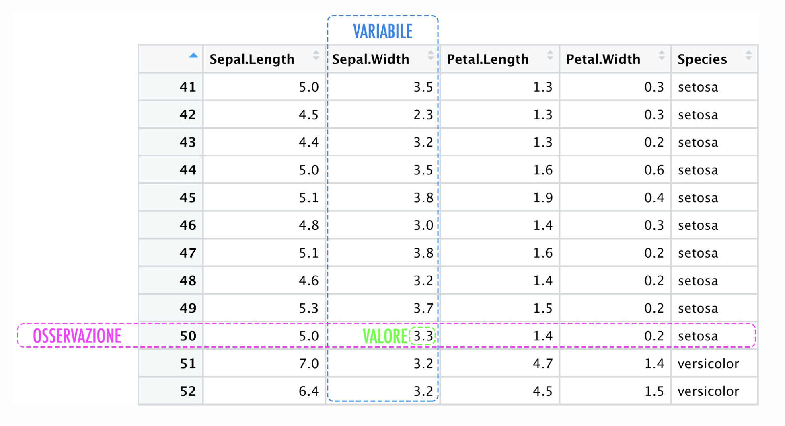

Python
Introduzione a Python
gestione script python
- modulo: file che contiene definizioni e istruzioni python (.py)
- nome modulo: variabile globale
__name__ - importare un modulo:
import nome_modulo - usare funzione modulo:
nome_modulo.nome_funzione() - importare una funzione specifica:
from modulo import funzione, * importa tutte funzioni
base
- commenti:
# commento - assegnamento di variabili:
a = 5 - assegnamento multiplo:
a,b = 5, 6oppurea = b = 5 - gestione booleani: 0 falso, altro vero
- stampa:
print('ciao')
aritmetica
- operazioni matematiche: + - * /
- numeri complessi:
1 + 2joppurecomplex(1, 2) - conversione di tipi:
int(3.14)oppurefloat(3) - ultima espressione assegnata
_
stringhe
- dichiarazione
'stringa uno'oppure"stringa due" - quoting
\" - stringhe su più riche: uso del carattere
\n\quando salto di riga - posso usare
rper evitare l’escape dei caratteri speciali, es.ciao = r"ciao\n\come\n\stai?" - escape caratteri speciali anche con
'''o circondate da ulteriori" - concatenazione di stringhe:
a + b - concatenazione di ripetizione di stringa:
stringa* 3 - stringhe dichiarate consecutivamente vengono concatenate:
'str' 'in' 'ga'→'stringa' - indicizzazione:
stringa[posizione] - indicizzazione a fette:
stringa[inizio:fine:step] - se indice posizione omesso all’inizio, parte da 0
stringa[:2]→'ci' - se indice posizione omesso alla fine, arriva fino alla fine
stringa[2:]→'ao' - proprietà utile:
s[:i] + s[i:]→s - indicizzazione negativa: parte dal fondo
stringa[-1]→'a' - NOTA: intervalli di indicizzazioni vengono troncati se fuori intervallo
- stringhe NON possono essere modificate
- lunghezza della stringa:
len(stringa) - stringa unicode:
u'ciao'
stringa = 'ciao'
stringa[0]
>> c
stringa[1:3]
>> ialiste
- dichiarazione:
lista = [1, 'stringa'', 3] - indicizzazione:
lista[posizione]come nelle stringhe - indicizzazione a fette:
lista[inizio:fine:step]come nelle stringhe - sono mutabili, anche attraverso indicizzazione a fette:
lista[0:2] = ['nuovi', 'elementi'] - lunghezza della lista:
len(lista)
istruzione if
if condizione:
print('condizione vera')
elif altra_condizione:
print('altra condizione vera')
else:
print('nessuna condizione vera')elifeelsesono opzionali,elifa cascata sostituiscono switch-case
istruzione for
for elemento in lista:
print(elemento)funzione range
range(n)genera una sequenza di numeri da 0 a n-1range(n, m)genera una sequenza di numeri da n a m-1range(n, m, s)genera una sequenza di numeri da n a m-1 con passo sfor i in range(len(a)): print(a[i])→ stampa tutti gli elementi di a
>>> range(5)
[0, 1, 2, 3, 4]
>>> range(2, 5)
[2, 3, 4]
>>> range(2, 10, 2)
[2, 4, 6, 8]
>>> a = ['Mari', 'had', 'a', 'dog']
>>> for i in range(len(a)):
... print i,(a[i])
0 Mari
1 had
2 a
3 dogistruzioni break, continue, else
breakinterrompe il ciclocontinueprosegue con l’iterazione seguente del cicloelseesegue un blocco di codice se il ciclo termina senzabreak
istruzione pass
passè un’istruzione nulla, utile per evitare errori di sintassi
funzioni e metodi
- definizione di una funzione:
def funzione(parametro): - funzione con più parametri:
def funzione(parametro1, parametro2): - ciclo si basa su indentazione
- ritornare valori,
return - metodi:
oggetto.metodo()
input
- si usa il comando
input()per leggere da tastiera input()restituisce una stringa- per convertire in intero si usa
int(input()) - per ammettere input multipli si usa
input().split()
Numpy
Python estremamente inefficiente a causa dei tipi dinamici, i cicli non sono operazioni vettorializzate, per cui son lenti
pacchetto per il calcolo scientifico, array multidimensionali, funzioni matematiche avanzate, operazioni su array
Si chiama mediante np.funzione() dopo aver importato import numpy as np
Generazione di array elementari
np.zeros(n, dtype = int)array di zeri di lunghezza nnp.ones(n, dtype = int)array di uno di lunghezza nnp.empty(n, dtype = int)array di lunghezza n con valori casualinp.full(n, fill_value, dtype = int)array di lunghezza n con valori fill_valuenp.arange(start, stop, step)array con valori da start a stop con passo stepnp.linspace(start, stop, num)array con num valori equidistanti tra start e stopnp.random.rand(n)array di n numeri casuali tra 0 e 1np.random.randint(low, high, size)array di numeri interi casuali tra low e high di dimensione sizenp.random.seed(seed)imposta il seme per la generazione di numeri casuali
probabilità uniforme discreta
np.random.randint(val_min, val_max+1, (righe, colonne))genera un array di numeri interi casuali tra val_min e val_max di dimensione (righe, colonne)
array casuali con probabilità uniforme
np.random.randint(min, max+1, (righe, colonne))genera un array di numeri interi casuali tra min e max di dimensione (righe, colonne)np.random.random((righe, colonne))genera un array di numeri casuali con probabilità uniforme continuatra 0 e 1 di dimensione (righe, colonne)- per estendere il valore basta:
np.random.random(5) * (8)5 valori da 0 a 0 esclusonp.random.random(5) * (12 -6)5 valori da -6 a +6 escluso
- per estendere il valore basta:
array casuali con probabilità normale
np.random.normal(mu, sigma, size)genera un array di numeri casuali con distribuzione normale con media \(\mu\) e deviazione standard \(\sigma\) di dimensione size
array casuale con estrazione
np.random.choice(a = LISTA, size = n)genera un array di dimensione size con estrazione casuale da a con probabilità p e sostituzione replace
nota: posso creare array da liste
np.random.choice(a=range(x), size = (righe, colonne), replace = boolean)
Se replace = false posso estrarre ogni elemento 1 sola volta
(possiamo generare array 16 o 32 bit)
np array
- attributi dimensionali (size, itembytes, shape, …)
- indicizzazione
- slicing (python → copia lista; numpy → visita array)
copy(): copia arraynp.reshape(): cambio dimensione matrice
concatenazione
np.concatenate(): concatena array, su matrici occorre specificare assi
np.vstack() e np.hstack(): concatenazione di matrici valori diversi nei sensi opposti
Duale: np.split(), np.hsplit(), np.vsplit()
Random generator
generare numeri casuali in modo non riproducibile
- uso di SEED:
np.random.default_rng(seed = 0), permette di riprodurli
UFUNC (Universal Function)
Operazioni vettorializzate:
- moltiplicazioni array:
np.arange(0,5) * 10 - divisione: array1 / array2
- potenza: 2 ** a
np.arange(5)→ 0,1,…4- somma, differenza, prodotto, divisione(+, -, *, /)
- divisione intera, negazione, esponenziale, modulo (
//, -,**, % ) - wrapper: np.add(), np.subtract(), np.absolute(), np.abs()
%timeit: ripete una riga di codice più volte e calcola tempo medio di esecuzione. Ritorna anche deviazione standard
%timeit operazione(argomenti)
Pandas
Serie
serie: combina valori e indici, accessibili mediante valuese index
forma normale:

serie.values(numpy_array)serie.index
Dizionario
DataFrame
Operazioni su pandas
Import Export dati
FIle CSV
Matplotlib
- stile:
plt.style.use('stile')per esempioplt.style.use('ggplot')
Mostrare grafico: plt.show()
%matplotlib inline: immagini statiche dei grafici%matplotlib notebook: grafici interattivi
FIGURA: plt.figure(figsize=(width, height)) per specificare dimensioni della figura
fig,ax = plt.subplots(2, figsize=(width, height)) per creare più grafici in una figura
ax[0].plot(x, y) per disegnare grafico su ax[0]
ax[1].plot(x, y) per disegnare grafico su ax[1]